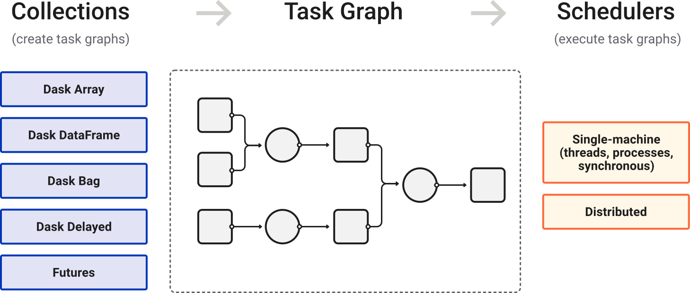

Dask
What Dask is, how it compares with Spark, and how it scales Python data work with parallel and distributed computing, performance stages and scheduling.
Imagine having the power of Apache Spark's distributed computing, but seamlessly integrated into your Python data science ecosystem. That's Dask. While Spark is fantastic for big data processing, Dask brings parallel and distributed computing capabilities directly to your Python environment, making it feel like a natural extension of libraries like NumPy, Pandas, and Scikit-learn. With Dask, you can effortlessly scale your data analysis and machine learning workflows across multiple cores on a single machine or even across a cluster of machines, all while leveraging familiar Python APIs and tools. It's like having the scalability of Spark with the simplicity and flexibility of Python, offering a compelling solution for tackling large-scale data challenges in a way that feels intuitive and seamless for Python-centric data scientists
Table of Content
What is Dask?
Dask is a parallel and distributed computing library that scales teh existing Python and PyData ecosystem.
Dask Over Spark
There are some use cases and trade-offs between Dask and Spark:
- Python Integration: Dask is written in Python, compared to Spark which is written in Scala, so this gives Dask the capability of achieving the ecosystem between all integrated Python libraries that's being used in Machine Learning and Data science like NumPy, Pandas, and Scikit-learn.
- On the other hand, as Spark is implemented in Scala, it has APIs for other language like Python which is known for (PySpark), but the Python API (PySpark) may not be as idiomatic or as tightly integrated with Python libraries.
- Easy of Use: The developers of Dask tried their best to make Dask usage is familiar with Data scientist who always use Pandas, and NumPy in their work, so Dask is a more user-friendly experience by mimicking the APIs of popular Python libraries such as NumPy, Pandas, and Scikit-learn. So there is no overhead and more easier to transit from single-machine to distributed computing without needing to learn new syntax or paradigms.
- Unlike Spark which has its own set of APIs and abstractions which may require a steeper learning curve for Python-focused data scientists.
Here are some comparison between Dask and Spark:
|Point of Difference|Details| |-|-| APIs|- Dask DataFrame reuses the Pandas API and memory model.</br>- Spark DataFrame has its own API and memory model, it also implements a large subset of SQL language. Machine Learning|- Dask does not have a built-in machine learning library, but it can be used in conjunction with other Python libraries like Scikit-Learn.</br>- Spark MLLib is a cohesive project with support for common operations that are easy to implement with Spark's Map-Shuffle-Reduce style system. Scale| Both Dask and Spark scale from a single node to thousand-node clusters. Internal Design|- Dask’s internal model is lower level, and so lacks high-level optimizations, but is able to implement more sophisticated algorithms and build more complex bespoke systems1.</br>- Spark’s internal model is higher level, providing good high-level optimizations on uniformly applied computations, but lacking flexibility for more complex algorithms or ad-hoc systems1.
For more comparison, refer to the official Dask spark - Comparison to Spark.
and for a Comparison conclusion from Dask docs:
- Spark is a mature and all-inclusive, and would be better in case you want a single project that does everything and you already on a Big Data hardware, especially in cases that are ETL + SQL.
- Dask is lighter weight and is easier to integrate into existing code and hardware, and in case you are beyond ETL + SQL, just want to add flexible parallelism to existing solutions, and you're already using Python and associated libraries like NumPy and Pandas.
A final good tip from the Dask developers, in case you manage 100GB or less of tabular CSV or JSON data, then you should forget about both Spark and Dask and use Postgres or MongoDB.
Dask Overview

High level collections are used to generate task graphs which can be executed by schedulers on a single machine or a cluster.
Before moving forward into this tutorial, let's try to get all the info we can highlight from this figure!
- Dask has its own Python data collection, but they are looks like the same normal Python data collections we are familiar with.
- The task is visualized as a task graph, where each node represents something like a sub-task, and the edge (arrow) represent the next step to be computed, which could be named as dependencies between sub-tasks.
- There are two families of schedulers included in Dask; the single-machine scheduler and Distributed scheduler.
Dask Collections
A parallelized versions of common Python data structure!; They are high-level collections that mimic familiar Python data structures, but are designed to operate in parallel on large datasets.
These make then easier for users to transition from single-machine to parallel and distributed computing without significant changes to their code.
An overview of their 4 main collections:
|Data Collection|Specs| |-|-| Dask Arrays|Parallelized versions of NumPy arrays.</br> They implement a subset of the NumPy ndarray interface using blocked algorithms, breaking up the large array into many small arrays Dask DataFrames|Parallelized versions of Pandas DataFrames.</br> They implement a blocked parallel DataFrame object that mimic large subset of Pandas DataFrame. Dask Bag|Excels in processing data that can be represented as sequence of arbitrary inputs.</br>It is ideal for semi-structure data and provides very general computation. Dask Delayed|A simple way to parallelize custom code.</br>It allows users to delay function calls into a task graph with dependencies.
Each of these collections partitions large datasets into smaller pieces, allowing computations to be performed in parallel. They also integrate well with the larger Python ecosystem.
For cases where the build-in Dask collections aren't sufficient, it's possible to create your own Dask collections. This is considered an advanced feature and requires fulfilling the Dask collection interface.
In addition to these, all collections support from_delayed functions and to_delayed methods, which allow you to do a bit of custom work with dask.delayed, then leverage the algorithms in dask.array or dask.dataframe, and then switch back to custom work
For more info, refer to Dask Docs - Working with Collections & Custom Collections.
Dask Components
To understand how Dask actually works, it's essential to grasp its core components, which work together to execute tasks in parallel and distributed environments.
Dask could be constructed into three main components; [Client, Scheduler, Workers]
+-----------------------+
| Client |
| DAG Process |
+-----------------------+
|
v
+--------------+
| Scheduler |
+------+-------+
|
+----------+------------+
| | |
v v v
+---------+ +---------+ +---------+
| Worker | | Worker | | Worker |
+---------+ +---------+ +---------+|Component|Sub-Component|Functionality| |-|-|-| Dask Client|Main|Developer interact with Dask through the Client.</br>Dask Client creates the Directed Acyclic Graph (DAG) of tasks by analyzing the code.</br>Responsible for instructing the scheduler what to compute.</br>Gather results from the workers and aggregate the results in the Client Process. ||DAG "Directed Acyclic Graph"|Represent the task graph constructed when performing operations on Dask collection.</br>The Graph consists of nodes representing individual tasks and edges representing dependencies between tasks.</br> Each task corresponds to a specific computation or operation on the data.</br> Dask construct this DAG dynamically as operations are performed, allowing it to efficiently track dependencies and parallelize computation. ||Client Process|Responsible for managing interactions between the user and Dask infrastructure.</br> Provides a high-level interface for user to create and manipulate Dask collections, submit computations for execution, and monitor task progress.</br>Coordinates communication with the scheduler, sending task graphs and receiving results back from the scheduler.</br> Additionally, it handles error handling, retries, and other aspects of job management. Dask Scheduler|Main|Middle layer between the Client and Workers.</br>Orchestrate the execution of tasks in Dask; it receives task graphs from the client, schedule tasks for execution on available workers.</br>Manages task dependencies to ensure parallelism and efficiency.</br>Dask Scheduler is a single point of failure but it's generally a very stable component of Dask. Dask Workers|Main|They are the computing units responsible for executing tasks assigned by the scheduler, defined in the DAG.</br> Workers can communicate to share data for a computation, but this can be inefficient and should be avoided.</br>Each worker runs on an individual machine within the cluster and can execute tasks in parallel, utilizing multiple CPU cores and/or threads.</br>Once the computation are done, they return the results to the client, which aggregates them with results from other workers.
Notes important to know:
- "Dask Scheduler is a single point of failure but it's generally a very stable component of Dask"; These are two important aspects of Dask architecture:
- Single point of failure as if the scheduler fails or becomes unavailable, the entire cluster may become unresponsive, and users may lose access to their computations. This makes the scheduler a single point of failure within the Dask system.
- Stability as despite being a single point of failure, the scheduler is typically a very stable component, they are designed to handle a wide range of workloads and operate reliably under normal conditions, with fault-tolerance mechanism built.
How Dask Handles Task Dependencies?
Using a concept called a Task Graph, which works as follow:
- Task Graph: in Dask, as computations are represented as DAG, where each node is a Python functions and edges represents data dependencies between these functions. So we could simplify this into: [Nodes->Tasks, Edges->Dependencies between these tasks].
- Task Scheduling: Once the graph is created, Dask used a task scheduler to execute the graph. The scheduler ensures that tasks are executed in an order that respects their dependencies. So if one task depends on the output of another, the dependent task won't be executed until the task it depends on has completed.
- Parallel Execution: The scheduler leverages parallelism where possible, So if tasks are independent of each other, they are executed simultaneously, making the full use of multiple cores or even multiple machines.
Internals
Understanding Performance
Each type of scheduling defined in Dask, it has its own different diagnostic tool.
In case you are interested in understanding the various phases where slowdown can occur, read the following Stages of Computation.
Stages of Computation
In this sections of document phases/stages of computation, it describes all of the parts of computation, some common causes of slowness and how to effectively profile.
They are categorized into 7 parts:
- Graph Construction
- Graph Optimization
- Graph Serialization
- Graph
- Communication
- Scheduling
- Execution
Scheduling
According to the docs; after Dask generate task graphs, it needs to execute them on parallel hardware. This is the job of a task scheduler. So there are different families of task schedulers exist, and each will consume a task graph and compute the same result, but with different performance characteristics.
References
- Understanding Dask Architecture: The CLient, Scheduler and Workers. By data revenue. https://www.datarevenue.com/en-blog/understanding-dask-architecture-client-scheduler-workers
- Dask scheduling documentation - https://docs.dask.org/en/stable/scheduling.html